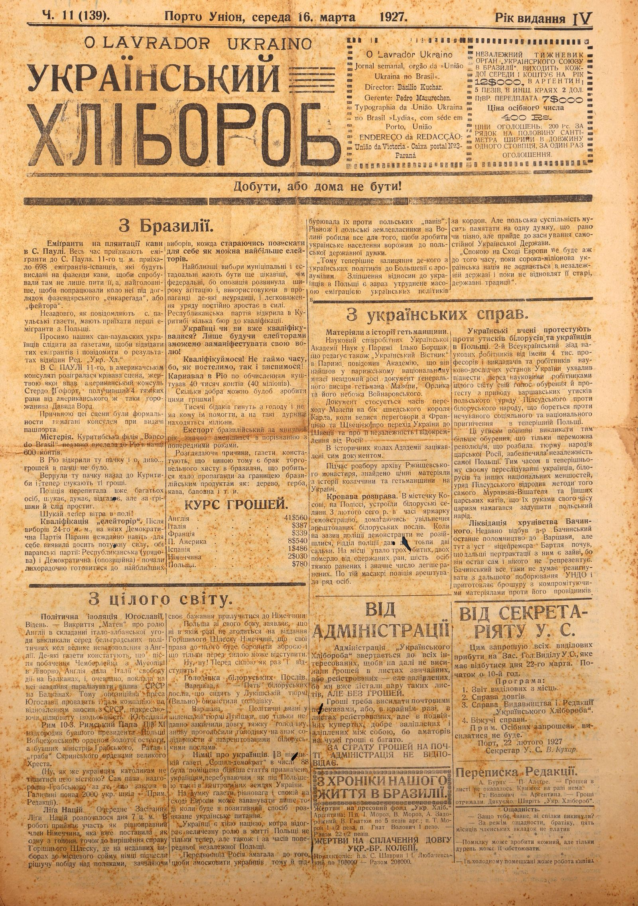
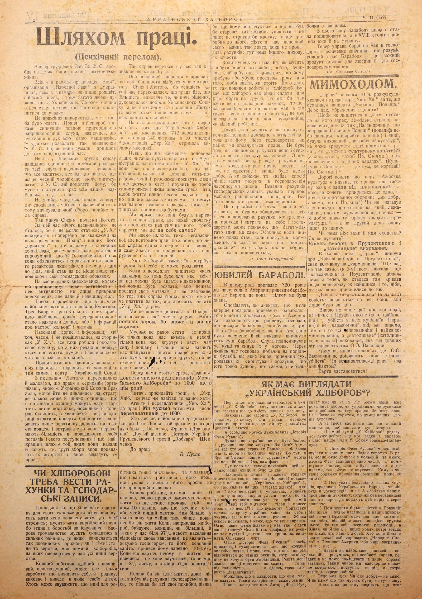
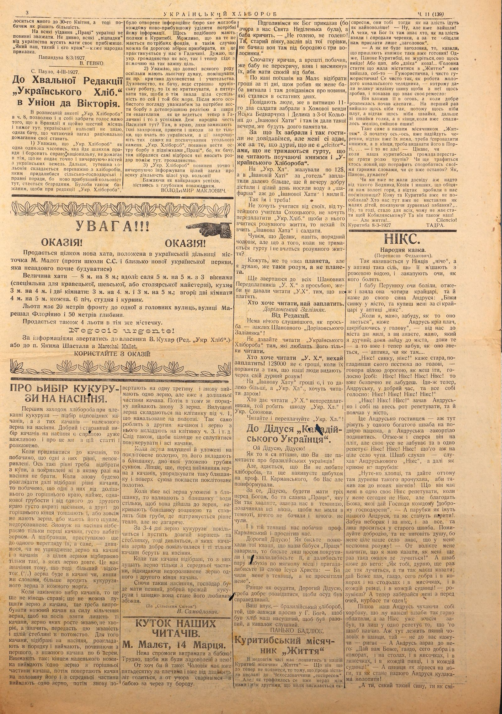
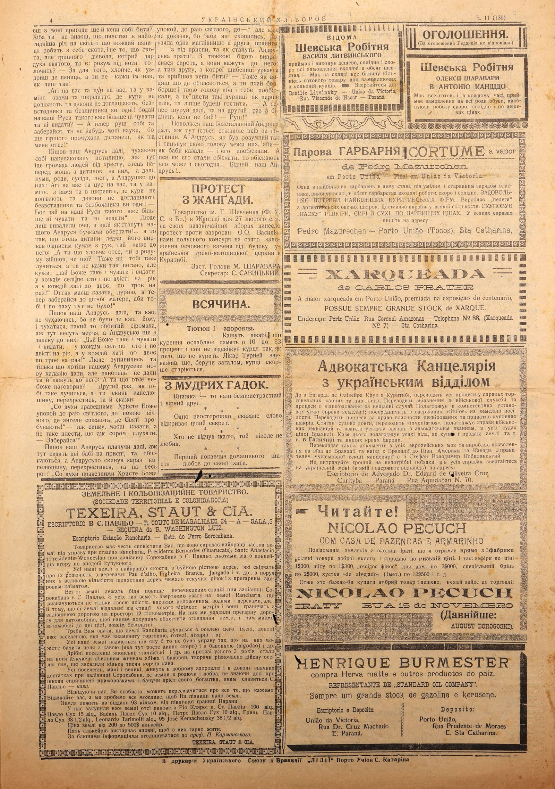

The newspaper 'Ukrainian Farmer', issue 11 (139) from March 16, 1927, presents diverse news from Brazil, Ukraine, and around the world. From Brazil, reports cover the arrival of Spanish and upcoming Polish emigrants to São Paulo, a violent incident at the American consulate, and general issues of trade and illiteracy. Ukrainian affairs include protests by scholars against the oppression of Belarusians and Ukrainians in Poland, the discovery of historical documents related to Hetman Mazepa in Paris, and the liquidation of 'khrunivstvo' (a political movement) by Bachynsky. International news covers the political isolation of Yugoslavia, England's role in the Balkans, Pope Pius XI's awards to Polish figures, and the situation in Upper Silesia. The issue also includes a chronicle of life in Brazil, financial reports, and editorial correspondence.
Pick a language for the transcript below — independent of the site language above. Showing one at a time keeps a dense newspaper page readable; click a translated paragraph to jump to the original.
No. 11 (139). Porto União, Wednesday, March 16, 1927. Year of publication IV
O LAVRADOR UKRAINO
THE UKRAINIAN CULTIVATOR
Achieve, or not be home
O Lavrador Ukraino A weekly newspaper, organ of the "União Ukraina no Brasil". Director: Basilio Kuchar. Manager: Pedro Mazurechen. Typographia da União Ukraina no Brasil "Lydia", with its seat in Porto, União
EDITORIAL ADDRESS: União da Victoria - Caixa postal №3 - Paraná
INDEPENDENT WEEKLY ORGAN OF THE "UKRAINIAN UNION IN BRAZIL". PUBLISHED EVERY WEDNESDAY AND COSTS 12$000 PER YEAR, 5 PESOS IN ARGENTINA, 2 DOLLARS IN OTHER COUNTRIES. HALF-YEAR SUBSCRIPTION 7$000
Price of a single issue 400 Rs.
ADVERTISEMENT PRICES: 200 Rs. PER LINE FOR HALF A CENTIMETER WIDTH ALONG ONE COLUMN, FOR ONE ADVERTISEMENT.
From Brazil.
Emigrants on coffee plantations in S. Paulo. Emigrants continue to arrive in S. Paulo. On the 11th of this month, 698 Spanish emigrants arrived, who will be sent to coffee fazendas, not only to taste it there, but, most importantly, to work on it under the supervision of the fazenda's "encarregado" or "feitor".
Soon, S. Paulo newspapers report, the first emigrants from Poland are expected to arrive.
We ask our Ukrainian residents in San Paulo to follow the newspapers, so they can visit these emigrants and inform the Editorial Board of "Ukr. Khl." about the results of their visits.
In S. PAULO, on the 11th, a bloody scene unfolded at the American consulate, in which American consul Sterdo Goforth fell victim, receiving 4 serious wounds from another American citizen, David Ward.
The reason for this incident was the formalities required by the consul for passport issuance.
Mystery. The Curitiba branch of "Banco do Brasil" recently sent a package containing 600 contos to Rio.
In Rio, the package was opened and, oh wonder... there was no money inside.
The package was returned to Curitiba, and now they are searching for the money.
The police have already questioned many people, searching, thinking, guessing, but all trace of the money has vanished.
Now, go chase the wind!
"Eleitores" qualification. After the elections on the 24th of last month, in which the Democratic Party of Paraná unexpectedly demonstrated considerable strength, both Parana parties: the Republican (governing) and the Democratic (opposition) began feverishly preparing for the upcoming elections, each trying to gain as many "eleitores" as possible.
The upcoming municipal and state elections are expected to be even more interesting than the federal ones, as the opposition has launched a wide-ranging campaign and, exploiting certain governmental irregularities and official negligence in its propaganda, is steadily gaining strength.
The Republican Party opened several qualification bureaus in Curitiba.
Ukrainians, have you qualified yet? Only by being "eleitores" can we manifest our will!
Let's qualify! Let's not waste time, for as we make our bed, so we shall lie in it!
The Rio Carnival, by calculation, cost 40 thousand contos (40 million).
How much good could have been done with this money!
Thousands of poor people die of hunger and have no one to help them, while millions are found for such trifles.
Brazilian exports last year significantly decreased compared to previous years.
Examining the reasons, newspapers state that the blame lies with the lack of commercial acumen among Brazilians, and that too little promotion is done abroad for Brazilian products such as: wood, mate, coffee, cotton, etc.
CURRENCY EXCHANGE RATES.
England . . . . . . . . . . . . . . . . 41$560 Italy . . . . . . . . . . . . . . . . . $387 France . . . . . . . . . . . . . . . $339 P. America . . . . . . . . . . . . 8$540 Spain . . . . . . . . . . . . . . . . 1$486 Germany . . . . . . . . . . . . . 2$030 Poland. . . . . . . . . . . . . . . . $780
FROM ALL OVER THE WORLD.
Political isolation of Yugoslavia. Vienna. — The revelations of "Matin" about England's role in the formation of the Italo-Albanian agreement caused great dissatisfaction with England among Belgrade's political circles. Some newspapers state that after Chamberlain's meeting with Mussolini in Livorno, England gave Italy freedom of action in the Balkans, and, obviously, tasked it with paralyzing the influence of the USSR in the Balkans. Therefore, the opposition press in Yugoslavia continues its campaign for the restoration of relations with the USSR, emphasizing Yugoslavia's complete isolation.
Rome 10-3. Pope Pius XI awarded former Polish President Wojciechowski the Order of the Golden Spur, and former ministers Grabski, Rataj, and "Count" Skrzynski the Orders of the Grand Cross.
(Well, how can Ukrainian Catholics not rejoice at this news? The Pope himself rewarded Grabski for closing over 2000 Ukrainian schools in Galicia — Ed. Note).
League of Nations. The regular session of the League of Nations began on the 7th of this month. Germany is participating as an equal member and has already put the issue of Upper Silesia as one of the main points for resolution, where in recent elections to the local parliament, Germans achieved a decisive victory over Poles, expressing their desire to join Germany. Poland, for its part, declares that it will under no circumstances agree to cede Upper Silesia to Germany, that it will defend its rights to it with arms, and that it will only retreat before force. Well, well! It will indeed retreat before force! Hunger strike of Belarusian Deputies. Warsaw. — Five Belarusian deputies, imprisoned in Lukishki prison (Vilno), have announced a hunger strike. Warsaw. — Political prisoners in Vilno's Lukishki prison, who only recently ended a long, hard hunger strike, have again declared a hunger strike in solidarity with the arrested Belarusian deputies. Germans about Ukrainians. In the German newspaper "Social-Democrat", issue 88 featured a larger article dedicated to Ukrainians residing both under Poland and in the central lands of Ukraine. According to the newspaper, equilibrium and peace in Eastern Europe can only be achieved when the Ukrainian question is resolved in a positive manner. "Ukrainians are the nation that plays a huge role in the life of Poland, not only now, but also during the times of the previous independent Poland. Pre-war Russia strove to Muscovize Ukrainians and therefore incited them against Polish "masters". Likewise, Polish landowners in Volhynia did everything to make the Ukrainian population hostile to the Polish state idea.
"Therefore, the current courtship of some Ukrainian politicians towards Bolshevism is understandable. Improving relations with Ukrainians in Poland is currently difficult due to the mass emigration of Ukrainian politicians abroad. But Polish society must remember one thought: that sooner or later, an independent Ukrainian State will be founded.
"There will be no peace in Eastern Europe until the forty-million-strong Ukrainian nation unites in an independent state and until its old state traditions are restored."
ON UKRAINIAN AFFAIRS.
Materials on the history of the Hetmanate. Ilko Borschak, a scientific associate of the Ukrainian Academy of Sciences in Paris, who also edits "Ukrainsky Vistnyk" in Paris, informed the Academy that he had found a previously unknown document of Hetman Mazepa's general scribe, Orlyk, and his nephew Voinarovsky, in the Paris National Museum. The document pertains to the time of Mazepa's defection to the side of the Swedish King Charles, when negotiations were held with France and Sweden regarding Ukraine's transition to Sweden and its independence and separation from Russia. Historical circles of the Academy are interested in this document.
During the examination of the archive of the Rzhyshchev Monastery, valuable materials on the history of the Cossacks and the Hetmanate in Ukraine were found.
Bloody crackdown. In the town of Kosiv, Polissia, Belarusian peasants staged a demonstration on February 3rd of this year during a fair, demanding the release of arrested Belarusian deputies. When the demonstrators did not disperse at the police's call, the police unit fired two volleys into the crowd. Three were killed on the spot, two died from their wounds, six people were seriously injured, and a significant number were lightly wounded. After this massacre, the police arrested a number of people.
Ukrainian scientists protest against the oppression of Belarusians and Ukrainians in Poland. The 2nd All-Ukrainian Congress of Scientific Workers, on behalf of 4 thousand professors and lecturers and workers of scientific research institutions of Ukraine, resolved to raise its voice of indignation and protest before scientific workers worldwide concerning the Warsaw oppressions of Pilsudski's Polish government against the Belarusian people, who are fighting against unheard-of social and national oppression in present-day Poland.
These oppressions should provoke even greater indignation, as it was only the victorious revolution, which broke the prison of nations of Tsarist Russia, that secured Poland's own independence. Meanwhile, in its present persecution of Ukrainians, Belarusians, and other national minorities, Pilsudski's government revived the methods of that same Muravyov-the-Hanger and other tsarist executioners, by whose hands tsarism once tried to suffocate the Polish people.
Liquidation of Baczynski's "rascality". Dr. Baczynski recently made his last pilgrimage to Warsaw, but there, from the lips of Vice-Premier Bartl, he heard that further negotiations with him were futile, as he was left alone and represented no one. Baczynski, however, does not intend to resign from further opposition to UNDO and is preparing a brochure with compromising materials against its leaders.
FROM THE ADMINISTRATION
The administration of "Ukrainsky Khliborob" appeals to all interested parties to no longer send money in ordinary or registered but poorly sealed letters, as we have already received a couple of such letters, BUT WITHOUT MONEY.
Money should be sent by postal money orders, or, in extreme cases, in registered letters, but in double envelopes, well sealed and glued together, because there are many eager for other people's money.
THE ADMINISTRATION IS NOT RESPONSIBLE FOR THE LOSS OF MONEY IN THE MAIL.
FROM THE CHRONICLE OF OUR LIFE IN BRAZIL.
Donations to the "Ukr. Khlib." press fund. Argentina: Messrs. I. Moroz, V. Moroz, A. Zadorozhny, V. Hnatyuk each 5 Argentine pesos; Mr. T. Moroz 1 1/2 pesos, Mr. Hnat Volovich 1 peso. — Total 22 1/2 pesos.
DONATIONS FOR THE PAYMENT OF DEBT TO THE UKR.-BR. COLLEGE.
Prudentópolis: Messrs. S. Shavryn and I. Liubachevsky each 10$000 — Total 20$000.
FROM THE SECRETARIAT OF THE U.S.
I hereby invite all committee members to attend the meeting of the Main Committee of the U.S., which is to take place on March 22nd. Start at 10 AM.
Agenda: 1. Report of committee members from their localities. 2. The matter of debts. 3. The matter of the Publishing House and Editorial Board of "Ukrainsky Khliborob". 4. Current affairs.
Note: No individual invitations will be sent.
Port, February 22, 1927 Secretary of the U.S. V. Kuchar.
Editorial Correspondence.
A. Buryak – P. Alegre. – No money was found in the letter. Books are not available at the moment.
Hn. Volovich ↔ Argentina. – Money received. Thank you. Spread "Ukr. Khliborob".
Economy.
– Why were you, Ivan, expelled from the cooperative? – For the "economy regime", brother, I haven't paid membership fees for five months.
* * *
– Anyone can make a mistake, but only a fool will defend it.
* * *
– Even in a cold dwelling, work can be in full swing.
THROUGH work. (A psychological breakthrough).
The outcome of the December General Assembly of the Ukrainian Union made a depressing impression on some of our colonies.
Everyone remembers the organization "Zorya", the organization "Narodna Rada" with "Ukraina"; everyone remembers not only their flourishing but also their end, and therefore many people thought that with the Ukrainian Union, the old story was beginning, that it was starting to decline.
This impression was exploited, as was to be expected, by "Pratsia" (Work) and its collaborators, who spread a full handful of the most diverse rumors, hoping that by putting all their machinery into motion, they would succeed in destroying the Ukrainian Union, which they so hated, because, as they thought, the most opportune time for it had come.
Even in the close circles of the union, there were individuals who helped spread such rumors and reinforced the impression that everything was collapsing, everything was coming to nothing, that no honest person could engage with the Ukrainian Union or help it, because a collapse of all our achievements was inevitable, and so on and so forth.
For some time, some colonies became dormant: they expected something extraordinary, and therefore waited to see what turn the whole matter would take.
Thus passed January and the beginning of February.
During this time, nothing extraordinary happened, nor could it have: "U. Kh." continued to be published as before, despite any harassment from "Pratsia" and its other "friends," and although it contained some flaws, our general public is already understanding enough to forgive them, as they are explained by the inexperience of the new editor, who had never dealt with such matters before and took this position merely to fulfill his civic duty.
In place of some discouraged colonies, others full of activity emerged, and with this activity, they not only covered the discouraged ones but also provided an excess of strength.
It should be emphasized that during these times, Curitiba, Três Barras, and Irati Colônia showed the greatest activity: from them came the most new subscribers, and articles or information about the mood of the colonies and readers began to arrive. The submitted articles and information, even if sometimes not published on the pages of "U. Khl.", still served and serve their purpose, because from them the editorial board learns about the life, thoughts, and desires of its readers and the colonies in general.
The work of active individuals in the colonies raised and continues to raise those colonies, and thereby also the center — the Ukrainian Union.
From mid-February, even the faint-hearted were convinced that work in a serious organization, such as the Ukrainian Union in Brazil, can continue despite the loss of a few, perhaps valuable, individuals; that in an organization, individuals can only have value insofar as they are supported by the majority. The moment these individuals lose the support of the majority, they have only relative value: that through their work and perseverance they will convince the majority of the truth of their views and their actions, and that the best path is the one they advocated and advocate, and that subsequent meetings will fully recognize their authority and again grant them leadership.
This is how it is everywhere, and this is how it is with us, and it cannot be otherwise.
This psychological breakthrough in recognizing the will of the majority occurred among us during January and February, because the minority during that time became convinced that the work was progressing, that the majority, in making this or that decision, was guided by the good of the Ukrainian Union, and not by its harm, and from mid-February, a revival and movement is felt throughout all our colonies.
How much life has revived can be seen, for example, from the fact that "Ukrainsky Khliborob" already has a definite 712 subscribers, and for over 140 readers, with the 10th issue, the Administration of "Ukr. Khl." stopped sending the newspaper.
We are certain that at least half of these readers will complain to the Administration for withholding "U. Khl." from them, because they have become so accustomed to it that it is necessary for them like that dear guest-advisor who will tell them how people live and what is happening in the world, and teach them how to live themselves and what path to take so that life flows cheerfully, joyfully, and beautifully; he will also, together with the readers, mourn our misfortune and rejoice with them in our achievements.
We believe they will complain about this loss, but let them first consider whom they should complain about: isn't it themselves?
We are following the path of quiet, unostentatious, but tireless work, because we know that only "work alone will pull us out of misfortune," and you yourselves know that work costs both effort and... money. "Ukr. Khliborob" also needs them and cannot give them and itself away for free. If there is any surplus from subscriptions, it will be for all of us, and with it, several books can be published which can be distributed or sold cheaply to our readers, but if there is a shortage, then the situation is worse: no one wants to pay for those who like to read "Ukr. Khl." for free.
We cannot look at "Pratsia," which sends out its issues for free. It sends them for free because it can, but we cannot.
We must all work together, because only work will lead us out of misfortune, only work will unite us and give us strength and respect, and only work will teach us to respect and value the work of others, and whoever can appreciate the work of others will not want to take advantage of it, but will pay their due.
We face the next task: to bring the number of subscribers to "Ukrainsky Khliborob" to 1000 this year!
Readers, send money, and "Ukr. Khlib." will immediately visit your home!
Agents and subscribers of "Ukr. Khl.", to work! We must reach 1000 subscribers.
Whoever gains the most subscribers by July 1st will receive as a reward the image "Shevchenko, Franko, and Drahomaniv". The second will receive Hrushevsky's "History of Ukraine" and the third Shevchenko's "Kobzar"!
To work! V. Kukhar.
SHOULD A FARMER KEEP ACCOUNTS AND HOUSEHOLD RECORDS?
A society that wants to have a basis for its economic existence must have a clearly defined goal towards which it strives; it must have a developed plan, otherwise it will perish in the struggle for existence. A healthy society must consist of strong individuals, which include individual citizens as well as various estates and strata, among them farmers, upon whom all other strata among us depend.
Every capable, diligent, and resilient worker will only be able to earn enough to support himself and his family, raise and bring up his children. Someone might note that circumstances are difficult for workers today, but I will point out that both the value of the worker and his labor have fallen today, while his demands have risen disproportionately high.
If a worker with only 10 fingers can somehow make a living through his labor, then it will be even easier for someone who, in addition to 10 fingers, also has a piece of land or some other property. The more land or property he has, the better he should live. If, for example, a farmer, whether small or large (and such make up about 97% of our entire population), fulfills his tasks, meaning he manages his household wisely, then his basic capital will certainly bring him 10-15‰. If he is a bungler, has learned nothing in life and does not want to learn, then he will not have a 1-2% profit, and in the end, he will consume his capital and perish.
If he had kept accounts and household records his whole life, for many years, he would have recognized all his mistakes, he would have known what paid off for him and what didn't, he would have tried to avoid those mistakes, and not only would he not have lost his property, but he would have added to it. None of us is secure in our property as long as we don't keep accounts: there is no other way but to keep them.
If a merchant must make an inventory of his property at least once a year, that is, calculate his earnings and see what he has gained or lost during the year to know how his business stands, then a farmer should do the same. It happens that a farmer has various payments for relatives, debts on the land, so if this were taken into precise account, it would sometimes turn out that he has no capital of his own in that land, has no prospects for improvement, and lives more miserably than a free laborer.
Such a state must disappear among us; everyone should know exactly what income their farm or property brings them, and whether the work pays off. This will happen when we learn to calculate clearly and concisely and keep household records. At first, let the farmer keep accounts as he knows and wants, and once he starts, he will not stop and will eventually keep them well. And if he wishes, he will find a way to keep accounts better in a farm journal or book. I consider keeping accounts and household records to be the first condition for rational farming. Without it, there is no control, no certainty.
Let us not complain about difficult times and circumstances, let us not blame everyone and everything, but by introducing accounts, controlling income and expenses for ourselves and the household, we may realize that we ourselves are greatly to blame. Especially when we live beyond our means, when we have less income than expenses, when "lordly" life destroys us, when a horse or cow that doesn't pay off consumes us. O. Ivan Nahursky.
POTATO ANNIVERSARY.
This year marks 360 years since potatoes were brought from America to Europe, where they were completely unknown.
They tell, as an anecdote, that when the imported potatoes were first planted, people couldn't understand why this plant was so praised in America. The farmer who planted the potatoes tried to boil and eat the potato seeds. But they were tasteless, and he ordered the potato bushes to be thrown away. The servant pulled out all the bushes and threw them into the fire. After some time, the farmer saw tubers in the ashes, from which a pleasant aroma emanated; he crushed them, tasted them, and understood that one should eat the tubers that are in the ground, not the small seed-pods.
From that time, potatoes quickly began to spread, and in the 18th century, they even reached Ukraine.
Now, potato cultivation has enormous significance in agriculture, which each of us understands. Potatoes are an important food product for humans and for farm animals. (According to "Silsky Svit").
IN PASSING.
"Pratsia" in its 10th issue clucked at the editor of "Ukr. Khl." for daring to write "Ukrainians and Poland." Well, indeed, an insult to dignity!
So as not to be left behind, it fired several shots at him, calling him one of those "Naddnipryans who sold Galicia to Poland" (you hit the sky with your finger, keep digging!) and who, being raised "in Asian culture," cannot understand "such primitive things" as "knowing how to culturally find??? (behave, perhaps? Ed. note) at dedications and similar parades." (Culture and Poland — where's the godfather, where's the wedding bread! Ed. note).
Dear colleagues of the pen! Asian culture is low, that's true, but it is a thousand times higher than the reptilian one you want to hide behind, that's one thing, and the second (regarding your defense: "we know well what Poland is") Doesn't it remind you of the anecdote about that drunkard who, lying under a fence, mumbled to himself: "I know that vodka well, the cursed stuff is harmful!" — and the next day he went back to the tavern.
Is there no similarity between you and him? What do you think? Bloody elections in Prudentópolis and "Catholic" upbringing.
In the same issue, "Pratsia," writing about the "Bloody elections in Prudentópolis," blames all the "pickpockets." Yet not so long ago (in issue 3), it wrote that there were no "pickpockets" at all in Prudentópolis, but now, when a bloody event occurred there, they immediately appeared, and supposedly, they were precisely the ones who contributed to it.
Strange is that "Catholic" (in quotes) conscience: it bends in all directions, just to be convenient.
The fault not only for this bloody event, but also for others in Prudentópolis (where there is the highest percentage of murders among all municipalities of Paraná) lies not with the "pickpockets," who, we know, are there and are all the most respected and conscious Ukrainians, but with the "Catholic" (Catholic in quotes) upbringing that the Basilian Fathers have cultivated there for many years.
Why are there not so many murders in other colonies where the Basilian Fathers do not visit? Has "Pratsia" considered this fact?
Worth considering!
WHAT SHOULD "UKRAINSKY KHLIBOROB" LOOK LIKE?
Having read the above headline in the 8th issue of "U. Khliborob," I want to share my thoughts regarding the content of our newspaper.
It turns out that the newspaper "U. Khliborob" is not to everyone's taste, if the editorial board receives various protests regarding the content of various articles and submissions.
And especially, someone is very bothered by "The Story of Fedko Rusyn."
I think this won't bother a Ukrainian, but what do "Rusyns" care about us? Or maybe someone is afraid like Hanka, Fedko's wife, not to see the devil? Because here, in Brazil, among our "Rusyns," there are perhaps the most devils. Here's a fact for you.
Here near us, this scoundrel also appeared to a woman, and it happened like this:
A woman fell ill, and having a fever, she cried out to her husband: "Husband! Throw out the 'Ukrainsky Khliborob' from that shelf, because the devil is sitting on these newspapers!" But since her husband was not a Rusyn, but a Ukrainian, he shouted at the sick woman, saying: "Lie still, because if I hit you with my fist behind your ears, that same devil will take you, soul and body, and carry you straight to hell!" And what do you think? The devil was scared by the Ukrainian's shout, tucked his tail between his legs, and scurried off somewhere, probably among the Rusyns. The woman soon recovered and says that it was all untrue. One strange thing. So the devil had nowhere to sit but on the newspaper? If it had happened to a Rusyn, the "father" would have had to drive him out with holy water. The devil was also mistaken.
So "The Story of Fedko Rusyn" is completely true and humorous, so much so that everyone gladly reads it and admits that it directly relates to our Rusyns, who at no price want to be Ukrainians. The rest, it seems to me, these protests do not come from the colonists, but, it seems, from some "intellectuals" somewhere.
Perhaps out of envy that they won't succeed like that. To such envious people, I will say this: Gentlemen! You will achieve nothing. The author of "Fedko Rusyn" has been among us for almost 15 years; he has already thoroughly considered whether Ukrainians or Rusyns have not acquired wealth; he works selflessly and does not crave the trough, in the opinion of our "spiritual fathers."
And there's no need to teach you that not everyone has the talent to write a story.
In my opinion, "U. Khliborob" is edited very well; — these are my thoughts, and at the same time, those of our entire Iracema-Papanduva Branch of the Ukrainian Union.
1. "The Story of Fedko Rusyn" should be published in every issue, at least briefly. If there are too many submissions from the colonies, Fedko can be omitted for one issue, and submissions published; if there are not many submissions, then "Fedko" should not be omitted. Readers who are offended by religious teachings may choose not to read them.
2. Unconditionally brand all kinds of scoundrels, traitors of the Ukrainian people, whether they are in a "cassock" or not. And especially our spiritual leaders, who live off the blood of our people, and drag this nation back into the Middle Ages.
3. Publish more news from Brazil. We live and will continue to live in our adopted homeland, Brazil, so it is more interesting for every colonist to know what is happening around him than about some unrest or revolutions in China, Japan, and other countries, which do not interest our people at all. Whoever wants to know more, let them get "Narodne Slovo" from North America, or other foreign newspapers.
4. Provide as many submissions from the colonies as possible — it is understood that personal matters cannot be published by the editorial board, only general matters. In this way, we will most quickly learn which settlement is progressing and which is regressing to the Middle Ages.
This is my idea. Whether it's good — I don't know. I'm not saying it has to be as I write here;
I hope to elaborate more on this topic later.
much is expected by April 30th, and then we'll see how the majority decides.
Ukrainians should not pay attention to any attacks from "Pratsia". It's no wonder that all "apostates" from Ukrainianism must have their refuge. "Like master, like man" - as the folk proverb says.
Papanduva 8/3/1927 V. HEVKO.
S. Paulo, 4-III-1927.
To the Esteemed Editorial Board of "Ukrainsky Khlib." in União da Vitória.
In the detailed questionnaire of "Ukr. Khliborob" in issue no. 8, I also allow myself to speak, despite being in Brazil for only six months and not knowing the demands of the Ukrainian colony here, yet I see that the reading public rationally puts forward its demands.
1) I believe that "Ukr. Khliborob", as the only newspaper that follows the path of truth and defends the national cause, is lacking in not providing accurate and exhaustive news from Ukrainian lands. Furthermore, the local colony here consists mainly of farmers, who would benefit from agricultural and legal advice, because a newly arrived colonist here becomes helpless. It would also be desirable for an information bureau to be opened at the editorial office of "Ukr. Khliborob" that could provide every newcomer with the necessary information. The Poles in Curitiba have something similar. It is possible that there are no necessary funds for this, in which case they could be collected through fundraising, as is practiced in our Galicia. I think that the Ukrainian community, as always, will now also help with such an important goal.
2) I believe that articles of all kinds, as long as they have a logical thought, should be published, e.g., criticism of the clergy and teachers. The clergy, as I see it, conducts terribly destructive work, so they should not be criticized, but branded so that the entire society on both sides of the sea knows about it. In my personal opinion, I would consider it necessary to fight against the current religion and spread evangelicalism, as is now being done in Galicia and with success. Where is the national honor of the Basilians here? There, in the homeland, the Poles close their orphanages, shelters, and schools just because they teach in Ukrainian, and these here invite the very same people to consecrate the cornerstone. "Ukr. Khliborob" should wage a sharp struggle against the henchmen of "Pratsia", because, as I see it, only outcasts who sow discord among the local citizenry have gathered there.
3) "Ukr. Khliborob" should accurately and exhaustively inform the entire public about all activities of the entire Ukrainian colony.
Wishing you the best of success, I remain with deep respect. VOLODYMYR MAKLOVYCH.
ATTENTION!!!
OPPORTUNITY! OPPORTUNITY!
A brand new house is for sale, located in the Ukrainian district of the town of M. Mallet (opposite S.S. school and near the new Ukrainian church, which will soon begin construction).
HOUSE SIZE — 8 m. by 8 m.; downstairs: a room 5 m. by 5 m. with 3 windows (special for a tailor's, shoemaker's, or carpenter's workshop), kitchen 3 m. by 4 m. and two rooms: 3 m. by 4 m. and 3 m. by 5 m.; upstairs: two rooms 4 m. by 5 m. each. There is an oven, a well, and a chicken coop.
The lot has 20 meters of frontage to one of the main streets, Marechal Floriano street, and 50 meters of depth.
Also for sale are 4 lots in the same town.
Negocio urgente!
For information, contact the owner V. Kukhar (Ed. "Ukr. Khlib."), or Mr. Yakym Shastal in Marechal Mallet.
TAKE ADVANTAGE OF THE OPPORTUNITY
ABOUT SELECTING CORN FOR SEED.
The first step for a farmer in cultivating corn is selecting appropriate cobs, and from those cobs, suitable grains for seed. A good and careful selection of cobs for seed is a very important matter, and we will discuss this in this article.
When you look closely at the cobs, you will see that some of them are even, not crooked. Such even ones should be selected from the pile, and crooked ones should under no circumstances be taken for seed. When we further examine the selected even cobs, we will see that some of them are almost of uniform thickness from the bottom to the top edge and densely covered with seeds from one end to the other, while others thin towards the top end and either have no grain at all or have it meager and underdeveloped. Again, for seed, we select only the first cobs, densely packed with grain. After selecting, we proceed to another inspection of them, namely, we check whether the grain on the cob is damaged, and from cobs with whole grain, we select only those in which the grain is long. This is important because then a larger percentage (‰) of grain will be in the cob, or, in other words, more corn grain will be harvested from each morg.
When the selection of cobs is finished, that is not the end of the matter; it is not yet possible to shell the grain from the cob, it is still necessary to test each cob for the germination strength of the grain, so that only those cobs whose grain grows vigorously, does not get sick, and thus will transmit this vigor to the entire stalk in the offspring, are taken for sowing. For this purpose, the cobs selected for seed are laid out in order, and starting from the first, 6 grains are removed from each cob. They are removed as follows: with the tip of a small knife, one grain is removed from the upper part of the cob, then the cob is turned halfway and one grain is removed from the middle part, then it is turned again by one third and one grain is again removed, but this time from the lower part of the cob. Then, in the same order, 3 more grains are removed. The shelled grains are placed in cell no. 1, which is drawn on the canvas. The same is done with the second cob, and its grain is placed in cell no. 3, and so on. It is also advisable to number all cobs later to avoid confusion.
When the grains are shelled and laid out on the marked canvas, it is placed in a tin can, the bottom of which is lined with thick cloth. It is better, even before removing the grains from the cobs, to arrange such a tin can and place the marked canvas on top of the cloth.
When all the grains are placed in the tin can, enough water is poured into the can to reach the grains, the can is covered with a board and placed near a stove, where a steady, but not too hot, warmth is maintained.
In 3-4 days, the corn grain will germinate and sprout a long rootlet and a stem, then they check which cobs' grains have germinated well, and only those cobs are taken for seed.
When the cobs are selected in this way, only the grain from the middle part is shelled from them, discarding the underdeveloped grain from both ends of the cob.
By sowing such seeds, the farmer will have a sure, good corn harvest, and it will quickly become his favorite crop.
(According to "Silsky Svit") V. Samoilovych.
OUR READERS' CORNER. M. Mallet, March 14.
There's no way to put up with the old woman! It's hard for us to be satisfied with her!
For example: A man is already fifty years old and has been shaving for twenty years, but yesterday we argued with the old woman about that beard.
We shaved as God commanded (yesterday was our Holy Sunday), the old woman shouts. — "You're not shaved, you're not shaved, you old drunkard, blinded by that vodka you don't see those three hairs under your beard."
At first I shouted, but finally I saw that I couldn't outshout the old woman, so I took and plucked them out to have peace from her.
After coffee, we went to Mallet to collect money for the days I worked when the old woman kicked me out, and there I learned about the news that had happened in recent days.
People say that on Friday the 11th, two soldiers took Yasko Bednarchuk and Delyk from the 3rd Colony from Khoma's stand to "Ivanova Khata" and there gave them such a dinner that they will remember it for a long time.
I didn't find out why they were taken and treated that way, but it seems to me that it's because they are fools, not "eleitors", don't stick together, and don't read instructive books and "Ukrainsky Khliborob".
They complained about $12 for "Ukr. Khl", but at "Ivanova Khata" they paid much more for the "hotel", even got a good dinner, and carried water all day from the "shafariz" to "Ivanova Khata" and washed it. That's what they deserve!
They don't want to learn from their own, from the local teacher Sokhotsky, they don't want to subscribe to "Ukr. Khlib." to learn a sensible life from it, so let "Ivanova Khata" and the soldiers teach them.
I heard that Delyk is even a decent man, but what good is that if he doesn't stick with the group and doesn't learn a sensible life?
They say it's such a planet, but I think it's reason, not a planet.
I also appeal to all Esteemed Subscribers of "U. Kh." with a request not to let those who don't pay read "U. Kh.".
Whoever wants to read, let them pay. Dorizonsky Zalizniak. From the Editorial Board.
There is nothing more appropriate than the request - the appeal of the Esteemed "Dorizonsky Zalizniak"!
Do not let those who only like to read "Ukrainsky Khliborob" read it.
Whoever wants to read "U. Kh.", let them pay! $12,000 is not money when compared to what our people spend due to their foolish minds!
There is money for "Ivanova Khata", and much more, but "Ukr. Khl" they want to read for free!
Whoever lets non-subscribers read "U. Kh." harms "Ukr. Khl." and the Ukrainian Union.
Read and subscribe to "Ukr. Khl."
To Grandfather "Canadian Ukrainian".
Oh Grandfather, Grandfather!
How glad I was that you still remember the Brazilian Ukrainians!
But, it seems, you don't like farmers, and you're even pointing a stick at Prof. P. Karmansky, because you were misinformed.
For this, Grandfather, you will have sin before God, because that glorious "Pratsia", which you praise so much, led us into a dungeon, closed all the windows, so that we would live in darkness, see nothing and hear nothing.
And in that dungeon, Prof. Karmansky saw us and enlightened us.
Dear Grandfather! If you had smelled that kvasha that our grandmother "Pratsia" brewed, you would have just wrinkled your nose and not praised her, but given her a couple of blows on her soft spot and reminded her of the words of Jesus Christ: "You saw me in prison, and you did not enlighten me."
Before judging, Dear Grandfather, one must investigate thoroughly so that the judgment is fair.
Your grandson, — a Brazilian farmer, one who always asked God for our daily bread, that it be wholemeal, and a proper piece. PANKO BADLYUK.
Curitiba monthly "Zhyttia"
In a short time, the monthly "Zhyttia" is to appear in our Curitiba — The reason it hasn't appeared yet is that the money was sent to Czechoslovakia "express". — But, as has happened many times among us and others, when something is sent express, they then, as if out of spite, go as slowly as possible! — Well, but they have arrived! And the Czechs, or God knows who, as if out of spite, took and sold the cuttings, and for that, they promised to send us only a "title".
— And if there's no title, they said they'd send ready-made books! So, Gentlemen of Curitiba, don't worry, something will come out! Either a goat or a "wild" goat!... The main article that was supposed to be in "Zhyttia" has already come out, that is — Humorous, and purely humorous! It's exactly like the work of a young blacksmith's apprentice, — who was given a large iron bar to make something out of it and show that he knows his craft:
He put it in the fire, and when it was well-heated, he began to hammer... At first, something like this came out, then something like a plow, and then something like an awl, further from the awl a needle, and in the end, when the iron was already burned up, nothing came out!
The same with our monthly "Zhyttia". At first, the cuttings were about to arrive, then they were gone, books had to be brought in, and in the end, it had to be published in Porto... — and that's not bad! — It's interesting, when will our Curitiba community stop playing the role of drones? Will someone new still appear who can please with beautiful words, or is this the end? What do you think, Gentlemen?
Haven't we had more than enough experience from people like Bodnyk, Koziy, and others who promised us golden mountains and then made a laughingstock of us? Whom has Curitiba not helped already? Who here hasn't treated us like small children, showing us silly toys?... Well, enough is enough for everyone, why shouldn't it be for Kobylyansky too? He is also ours! — But life!... Cilencio! Curitiba 8-3-1927 TADRA.
NIX.
A folk tale. (Retold by Fedkovych).
That's what "nicho" is called among Germans, and in the pharmacy, it's a salt that is mixed with rose water and dropped into the eyes when they hurt.
And old woman Perunykha's eyes hurt, so she took four kreutzers and said to her son Andrus: "Run, son, to the city, and buy me 'nix' at the pharmacy for these kreutzers."
"What if I forget what it's called, Mama?" says Andrus through tears, scratching his head, "— it's two miles from us to the city, and you know, Mama, how foolish I am; by the time I get to the city, by the time that — and I've already forgotten now what it's called — pharmacy, or whatever..."
"Nix! Son, nix!" says the old woman, stroking her darling's head, "— say it loudly to yourself the whole way as you go: Nix! Nix! Nix! Nix! Then you surely won't forget. Go now, Andrusko, in good time, and always say loudly to yourself: Nix! Nix! Nix! Nix!"
"Nix! Nix! Nix!" Andrusko began to shout at the top of his lungs, and he rushed to the city.
Andrusko walks along the highway — when suddenly, in a rich Schwab's yard, they are slaughtering a pig, and Andrusko was eager to watch. So he leaned on the fence, but he didn't forget his task and kept repeating: Nix! Nix! Nix! so loudly that the whole village could hear him. The Schwab listened and listened to Andrusko's "Nix", and then he shouted at the lads:
"Come on, lads, give that fool such a thrashing that he'll remember it until the new wreaths! Why should he keep shouting his 'Nix' at me, when today I have not 'Nix', but God's grace, which may the Lord grant to every good master." — And the lads grabbed our Andrus and started to beat him! The poor fellow forgot about 'nix' and everything else, and just pleaded with the old Schwab. "Have mercy, good sir, and don't beat the soul out of me, for our whole village knows that I am not of sound mind! — Would you rather teach me what I should say if such an occasion happens to me again!" And the Schwab says to him: "If such a thing happens to you again, you fool, you should say: May God grant you, master, this good in your storerooms, and in your barns, and in your bowls, and in every pot, and in every vessel! — understand? And now get out of my sight, you blockhead!"
Our Andrus went off, scratching his back where the furious Schwabs had so nicely beaten him, and he had completely forgotten about "Nix", only repeating what the Schwab had taught him. Just then, a drunk man was lying in a ditch, and — begging your pardon — vomiting. — And Andrus immediately said to him: "May God grant you, master, this good in your storerooms, and on your tables, and in your bowls, and in your spoons, and in every pot, and in every vessel!" — And the drunkard sprang to his feet and began to pummel our Andrus with his fists!
"And you, you son of a gun, how dare you..."
…are you also making fun of my adventure? Don't you know that drunkenness is the most disgusting thing in the world, and that every drunkard makes a beast of himself, and not just a beast, but a sinful devil, who tramples the gift of the Holy Spirit, that is: reason, underfoot? — Therefore, boy, if you see drunkards anywhere, don't tell them anything but this:
"A curse on you and shame on you, and into the stones with you and into the rubble, where chickens don't crow and bells don't ring, you shameless and faceless ones! May such a thing never again be heard or seen in your Rus'! — Now go on your way and get out of here, and don't forget my lesson, because you'll get an even worse thrashing than this from me!"
Our Andrus went on, scratching his bruised head, when suddenly a crowd of people came from a christening, the priest in front, the mother with the child behind him, and then godparents, relatives, neighbors, guests, and Andrushko to them: "A curse on you and shame on you, and into the stones with you and into the rubble, where chickens don't crow and bells don't ring, you shameless and godless ones! May God grant that such a thing never again be heard or seen in our Rus'!" — The people just stared, and then they started to turn on our Andrus with sticks!... and it was such that the child's father barely pulled him out of the hands of the drunken godparents, and said to him: "What is it, boy, have you lost your mind or what? When such a thing happens to you, don't say such bad things, but say: 'God grant that such a thing be heard and seen in every village by one hundred and two hundred a year, and in every house by two, by three at a time!' That's what you should say, you fool, and now get out of here to the child's mother, so that you don't even smell of this place!"
Our Andrus went on, no longer scratching, for there was nowhere left for him to scratch, such a beaten wretch he was, when suddenly they were carrying a dead man, and Andrushko from afar to them: "God grant that such a thing be heard and seen, in every village by one hundred and two hundred a year, and in every house by two, by three at a time!" The people stopped and were just about to give our Andrus a new thrashing, but the priest didn't let them and said to him: "What have you said, poor fellow? — The next time such a thing happens to you, take off your hat, cross yourself, and say:
"With the spirits of the righteous, Christ God, grant rest in the bright paradise, in eternal peace, where angels sing, where saints dwell!" — that's what you should say, my son, and not babble such things that it's a shame to listen to. — Get out of here!"
Our Andrus went on, weeping, when suddenly two old women were sitting on the porch, delousing themselves, and Andrushko immediately took off his hat, crossed himself, and with a full voice: "With the spirits of the righteous, Christ God, grant rest, to the bright paradise, to—" but he didn't finish, because the old women jumped up, one took a mangle and the other a washing paddle
from under the porch, and they started to beat Andrus! With great difficulty, the orphan begged for mercy, and they said to him: "And you, rascal, from which gallows did you break loose and come to make fun? — When you see people delousing themselves, you should quickly push your head in and let them delouse you too, and not babble such nonsense as you did before, and you'll be better off. — Now get going, and next time don't make fun of poor people! — Go!"
Our unfortunate Andrus dragged himself further, when suddenly there was a pack of dogs on the road. And Andrus, being smart, stuck his head among them, so that — as the old women said — they would delouse him too. And when the dogs started to delouse him, they might be delousing him even today... Poor our Andrus!..
PROTEST FROM JANGADA.
The T. Shevchenko Society (F. U. S. in Br.) in Jangada, on February 27 of this year, at its extraordinary meeting, issued a protest against the invitation of the Polish consul by the Basilian Fathers to the ceremony of laying the cornerstone for the construction of the Ukrainian Greek-Catholic church in Curityba.
Deputy Chairman M. SHARAVARA Secretary: S. SAVYTSKYI.
MISCELLANEOUS.
Tobacco and health.
Doctors say that smoking weakens memory by 10 to 33 percent and sleep does not refresh a smoker as much as it does a non-smoker. Dr. Tournay noted that, generally speaking, smokers age faster.
FROM WISE THOUGHTS.
A book † is our impartial and faithful friend.
* * *
One carelessly spoken word reveals an entire secret.
* * *
He who has not felt sorrow has never loved.
* * *
The first indicator of domestic happiness is love for one's home.
LAND AND COLONIZATION SOCIETY. (SOCIEDADE TERRITORIAL E COLONISADORA) TEXEIRA, STAUT & CIA. OFFICE IN S. PAULO — R. COUTO DE MAGALHÃES, 24 — A — SALA 3 — CORNER of R. WASHINGTON LUIZ. Office Estação Rancharia — Estr. de Ferro Sorocabana.
The Society has the honor to inform you that it sells the best plots of land for cultivation near the stations of Rancharia, Presidente Bernardes (Guarucaia), Santo Anastacio and Presidente Wenceslau along the Sorocabana railway in S. Paulo, in lots from 5 alqueires upwards, according to the buyer's preference.
All our lands are of the best quality, with lush tree growth, which testifies to their fertility, with trees such as: Pau d'alho, Figheira Branca, Jangada, etc., and alongside them with a large number of noble trees, many flowing rivers and with a beautiful, healthy climate.
All these lands are located near the aforementioned stations along the Sorocabana railway in S. Paulo. Of all these lands, we draw attention to the lands of Rancharia, which are distinguished not only by their quality, high elevation, water, and trees, but also because these lands are only eight hundred meters from the station and border the railway for a distance of 12 kilometers. On them, we have built a beautiful road for automobiles to facilitate land viewing for our buyers, and we have automobiles for this purpose, completely free of charge.
You should know that the lands of Rancharia are connected to the settlement of the same name, which is already quite populated and has excellent trade, hotels, hospitals, etc.
All our lands are suitable for any kind of cultivation, so you can see fields with coffee (which grows surprisingly fast here) and with cotton (algodão) and others.
Small Japanese, Italian, and other settlers stood on their feet within just 3 years, thanks to abundant harvests of grain and cotton, simultaneously creating a real settlement by planting several thousand coffee bushes.
All settlers, small and large, live in good health and in quite significant prosperity along the Sorocabana railway, where the land is fertile and good, not yet knowing about the damage caused by frosts, and seeing the growth of their wealth, for which S. Paulo is famous — coffee.
By visiting us, you can personally verify everything we say. Visit us, and we will do everything possible to help you get to know our lands.
The land is located 93 km from the northern border of Paraná.
The following gentlemen from Rio Claro have already purchased land from us: Mr. St. Pavliv 100 alq., Pavlo Sukh 15 alq., Vasyl Pavlo Sukh 10 alq., Petro Pavlo Sukh 10 alq., Hryts Pavlo Sukh 38 1/2 alq., Leonardo Tarimolli 95 alq., José Kemacheusky 38 1/2 alq.
Land price from 200 to 500$ per alqueire.
Five alqueires are fully sufficient to live well from them.
For further information, please contact Prof. P. Karmansky. TEXEIRA, STAUT & CIA.
FAMOUS Shoemaking Workshop of VASYL LYTVYNSKYI
accepts and executes all shoemaking orders cheaply, reliably, and quickly. — Has an increasing quantity of ready-made goods in stock for merchants ordering from colonies. ◼ Contact: Basilio Litvinsky — União da Victoria, Rua Visconde de Nacar — Paraná.
ADVERTISEMENT. (The Editorial Board is not responsible for advertisements).
Shoemaking Workshop of OLEKSA SHARAVARA IN ANTONIO CANDIDO
Always has ready-made items and accepts orders for all types of footwear at any time, performing work quickly, reliably, and at low prices.
Steam TANNERY | CORTUME a vapor de Pedro Mazurechen em Porto União, — Filial em União da Victoria.
One of the largest tanneries in this state, under the skillful and diligent management of the owner, performs all types of tanning work quickly and reliably. SATISFIES THE NEEDS OF THE LARGEST CURITYBA FIRMS. Produces "pelegos" from Argentine sheepskins. Delivers products in any quantity. BUYS "CASCA" AND SKINS, RAW AND DRY, AT THE HIGHEST PRICES. For all matters, write to the address
Pedro Mazurechen ~~~ Porto União (Tocos), Sta Catharina,
XARQUEADA de CARLOS PRATER The largest xarqueada in Porto União, awarded at the centenary exhibition, ALWAYS HAS A LARGE STOCK of XARQUE. Address: Porto União, Rua Coronel Amazonas — Telephone Nº 88, (Xarqueada Nº 7) — Sta. Catharina.
Law Office with Ukrainian Department
Dr. Edgard de Oliveira Cruz in Curityba, conducts all processes in commercial, criminal, and civil matters. Handles military service exemptions and processes for compensation for accidents. Arranges all land matters in competent institutions; mediates in obtaining "titulos" for land properties. Conducts processes for ownership rights of requisitioned and privately purchased chacras. Collects debts judicially, conducts "inventarios", settles matters of military requisitions and generally all matters related to the legal profession, in all courts of Brazil. In addition, handles all matters such as the purchase and sale of land, etc., in Galicia and other European countries.
Also translates documents from all European languages and arranges permits for entry into Brazil and exit from Brazil to North America and Canada. The manager of the foreign language section of the office is Mr. Stefan Volodymyr Kobylianskyi.
Do not waste money on unnecessary trips, but for all matters, contact us in Ukrainian (in which you will receive a response) at the address: Escriptorio do Advogado Dr. Edgard de Oliveira Cruz Curityba — Paraná — Rua Aquidaban N. 70.
☛ Read! NICOLAO PECUCH COM CASA DE FAZENDAS E ARMARINHO
I inform my countrymen from the Irati area that I have received all kinds of good quality goods directly from the factory and will sell them at a low price. Namely: zephyrs at 1$300, shitu at 1$300, "tecidos finos" for ladies at 2$000, special brin at 2$000, "de alvejado" scarves (1 meter) at 12$500, etc. So, whoever wishes to buy good and cheap goods, should visit the store: NICOLAO PECUCH IRATY RUA 15 de NOVEMBRO (Formerly: AUGUST BOROGOSKI).
HENRIQUE BURMESTER buys Herva matte and other products of the country. REPRESENTATIVE OF "STANDARD OIL COMPANY". Always a large stock of gasoline and kerosene. Office and Depot: União da Victoria, Rua Dr. Cruz Machado E. Paraná. Depot: Porto União, Rua Prudente de Moraes E. Sta Catharina.
| Date | 1927-03-16 |
| Issue | No. № 11 (139) |
| Pages | 4 |
| Blockchain | 0x7e1360a8308f73b3da… |
| 🗂️ IIIF manifest | manifest.json (4 canvases) ↗ |
| IIIF Presentation 3.0 — paste the manifest URL into Mirador or any other IIIF-compatible viewer to page through the issue. |